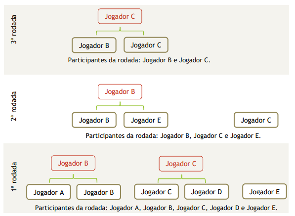
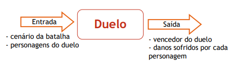

O jogo de batalha entre personagens baseados na Terra-Média que é o mundo do Senhor dos Anéis. A batalha ocorre por turnos de forma automática no formato de todos contra todos, considerando as características dos personagens. Cada personagem é de uma nação e possui 5 habilidades, conforme descrito a seguir.
As habilidades que os personagens possuem são força, velocidade, precisão, armadura e recuperação. Além da nacionalidade e das 5 habilidades, o personagem possui seus pontos de energia e um nome para identificá-lo ao longo de suas interações no jogo. No início do jogo, o personagem possui 100 pontos de energia e outros 100 pontos de habilidades que devem ser distribuídos entre as habilidades da forma que o jogador preferir.
Neste jogo, foram selecionadas as seguintes nações da Terra-Média: Orc Snaga, Uruk-hai, Cavaleiro de Rohan, Guerreiro de Gondor, Hobbit, Elfo da Floresta, Elfo de Lothlórien e anão. A casa de cada nação é, respectivamente, Cirith Ungol, Portão Negro, Abismo de Helm, Minas Tirith, O Condado, Floresta das Trevas ou Mirkwood, Caras Galadhon ou Cidade das Árvores e Colinas de Ferro. A Tabela 1 descreve a ligação entre cada nação e a sua casa.
| Nação | Casa |
|---|---|
| Orc Snaga | Cirith Ungol |
| Uruk-Hai | Portão Negro |
| Cavaleiro de Rohan | Abismo de Helm |
| Guerreiro de Gondor | Minas Tirith |
| Hobbit | O condado |
| Elfo da Floresta | Floresta das Trevas |
| Elfo de Lothlórien | Caras Galadhon |
| Anão | Colinas de Ferro |
A batalha é realizada em um cenário fixo no qual podem ser alocados até oito jogadores, sendo que só pode haver um personagem de cada nação. O cenário é fixo porque a batalha inteira ocorre neste único cenário escolhido. Dentre os cenários possíveis, o jogo pode definir qualquer uma das oito casas das nações.
Não existem alianças e “amizades” entre os personagens, portanto eles se enfrentam em duelos de um contra o outro em cada rodada e o vencedor avança para a próxima rodada. No início da rodada, os personagens são distribuídos aleatoriamente em pares para realizarem a batalha e, caso a quantidade de personagens na batalha seja ímpar, um deles ficará fora da batalha e se classificará automaticamente para a rodada seguinte. Os vencedores de uma rodada são novamente distribuídos aleatoriamente para se enfrentarem em uma nova batalha. As rodadas são repetidas de acordo com a quantidade restante de personagens na arena, até que ocorra a batalha final e seja definido um personagem como o vencedor. O jogador que “sobrou” na rodada anterior não pode sobrar novamente na rodada seguinte.
A batalha é realizada em turnos de duelos diretos entre dois personagens, conforme foi descrito anteriormente. Porém, é preciso descrever com mais detalhes como se deve determinar o vencedor de cada duelo.
Antes, deve-se observar que um duelo possui como informações de entrada: o cenário da batalha e os dois personagens do confronto com as suas características. Após o confronto, a informação de saída é o vencedor do confronto com os danos que sofreu e infringiu.
O confronto ocorre em turnos no qual cada personagem faz uma jogada que pode ser ataque, defesa ou movimentação em direção ao adversário.
O ataque é o golpe desferido pelo personagem no adversário. O golpe possui uma probabilidade de atingir o adversário e essa probabilidade é calculada de acordo com a sua habilidade naquele tipo de ataque. O ataque pode ser do tipo:
Considera-se que o ataque atingiu o adversário se ele estiver dentro do raio de ação dos tipos de ataques previstos. Portanto, não é possível realizar ataque em distância superior a dez passos. Caso o ataque atinja o adversário, o dano causado será calculado com base nos fatores: habilidade do personagem no tipo de ataque desferido, habilidade do adversário em realizar a defesa, se o adversário está realizando a defesa e bônus ou penalidades causadas pelo cenário da batalha.
A defesa é a ação que o personagem realiza para se proteger e reduzir os danos causados por golpes que podem ser desferidos pelo adversário. A defesa possui uma probabilidade de reduzir o dano do ataque e essa probabilidade é calculada de acordo com a sua habilidade naquele tipo de ataque. A defesa pode ser do tipo:
Considera-se que foi realizada a defesa se a ação do personagem é de defesa e se o adversário deferiu algum golpe contra ele. Caso ocorra a defesa, a redução do dano causado deve considerar o tipo de ataque recebido, habilidade do adversário no tipo de ataque desferido, a capacidade do personagem em realizar a defesa e bônus ou penalidades causadas pelo cenário da batalha.
Movimentação: é o avanço do personagem na arena do confronto. Esse avanço se dá um passo por vez até que não existam mais passos entre o personagem e o adversário.